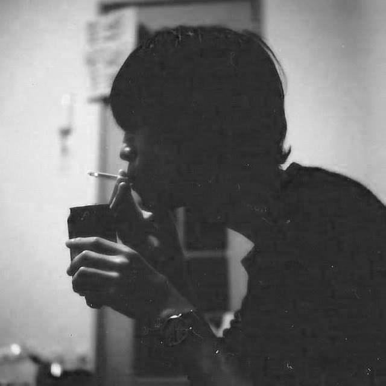
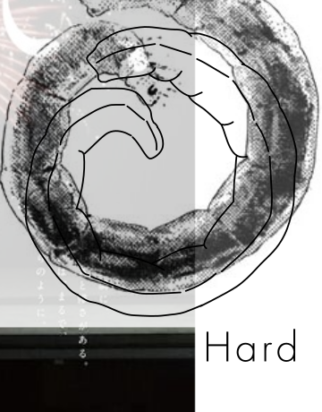
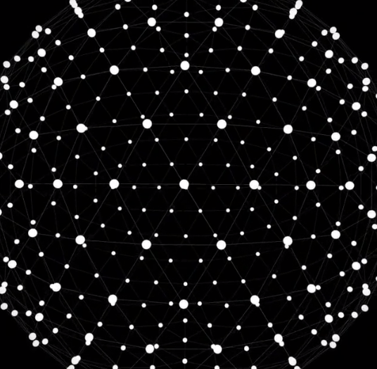
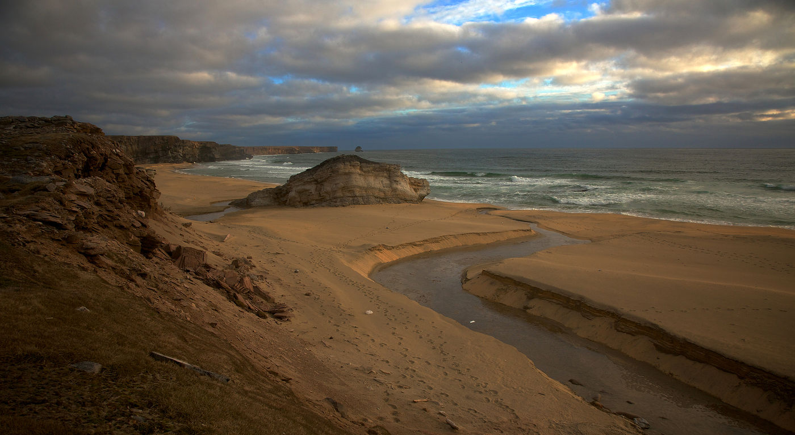
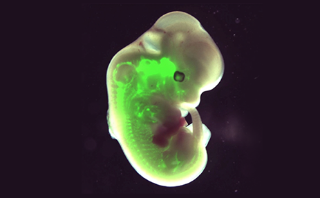

<!DOCTYPE html>
<html lang="ja" dir="ltr">
<head>
<meta charset="UTF-8">
<meta http-equiv="X-UA-Compatible" content="IE=edge">
<meta name="viewport" content="width=device-width, initial-scale=1">
<meta name="keywords" content="">
<meta name="description" content="Living is Hard">
<title>LiH</title>
<meta property="og:title" content="Living is Hard" />
<meta property="og:type" content="website" />
<meta property="og:description" content="Living is Hard" />
<meta property="og:url" content="https://lih.co.jp" />
<meta property="og:image" content="" />
<meta property="og:site_name" content="" />
<meta property="og:locale" content="ja_JP" />
<title></title>
<link rel="stylesheet" type="text/css" href="css/base.css" />
<link rel="stylesheet" type="text/css" href="css/style.css" />
<link rel="stylesheet" type="text/css" href="resizable/jquery-ui.css" />
<script src="https://code.jquery.com/jquery-2.1.4.js"></script>
<script src="http://ajax.googleapis.com/ajax/libs/jqueryui/1/jquery-ui.min.js"></script>
<script src="js/main.js"></script>
<meta name="viewport" content="width=device-width">
<!--[if lt IE 9]>
<script src="http://css3-mediaqueries-js.googlecode.com/svn/trunk/css3-mediaqueries.js"></script>
<![endif]-->

</head>
<body>
<div class="wrapper">
  <div class="about">
      <div class="aboutInner" class="cf">
          <dl>
              <dt class="font">PROFILE</dt>
              <dd>岡崎　太祐　Okazaki Taisuke<br />
              Environmental Designer<br />
              B3 Keio University<br />

              <dt class="font">CONTACT</dt>
              <dd><a href="mailto:info@taisuke.co" target="_blank">info@lth.com</a></dd>

              <dt class="font">RESEARCH</dt>
              <dd class="last"極限環境デザインを学んでいます。砂漠、寒冷地、高地など極限環境の中で特に離島における人間の居住空間の提案をエネルギーの観点から行っています。<br />
              都市と同等の快適な空間を極限環境に実現する手法としてエネルギーの独立化を行うために太陽光電池とレクテナを用いて無線給電のプロトタイプ制作を行い、<br />
              実際に伊豆諸島の利島において評価を行い、居住困難環境における生活の提案を行っています<br /><br />
              to living extreme space:mountain,island,these plan apply for the city.particluraly concidering rectena means energy transimit.<br />
              these technology come into indepensable infrustructure based on city and tokyo,so our countreme exonomy is decreasing,<br />
              we plan to indepensable vilaagelike commune,to promote more happiness</dd>
          </dl>

          <div class="aboutInner_left"></div>
      </div>
  </div>
  <header>
      <div class="logo is-drag">
      <h1></h1>
      <div class="info">about</div>
    </div>
  </header>
    <!-- <div class="slide is-drag">
        <ul id="slideshow">
          <li></li>
          <li></li>
          <li></li>
          <li></li>
          <li></li>
          <li></li>
      </ul>
    </div> -->
    <div class="is-drag is-resizable window disNon item-surface">
      <nav class="window-nav">
        <ul class="window-nav-tab">
            <li class="window-nav-tab-a id-project is-current ">project</li>
            <li class="window-nav-tab-a id-research">research</li>
        </ul>
        <div class="close_btn">×</div>
      </nav>
      <div class="is-render">
        <div class="column">
          
            <div class="column-s">
              <h2 class="column-s-title"><span class="column-s-title-en">Products Surface ganerate Energy</span><br><span class="column-s-title-jp">太陽電池を用いた曲面表現プロダクトサーフェイスに発電機能を付加する研究</span></h2>
              <p class="column-s-s">太陽電池研究の焦点はエネルギー効率の高い材料を生産することに置かれ、使用方法は屋外に設置するなどに限られてきた。国内エネルギー消費の３割が個人生活の中で消費されていることに注目し、
              エネルギーを生活の中で消費と充電を行い通貨のように使用する生活を提案する。その中で現在私たちが使用しているスマートホンに縛られている生活を送っていることに環境負荷を低減する表面にエネルギー生産能力を与える方法として太陽電池の選択があり、
              塗料とパネルの選択のなかでパネルを選択したのは、生み出すエネルギー量、三角形型の汎用モジュールを制作することで従来の製品、カバン、水筒、衣服、建築材に対してエネルギーの生成を行うことが出来る。</p>
              <p class="column-s-s">Product Surface generate enegy lead to undepensable infrustructure.
              TriSola project is to make triangle solar panel fablic.It  is piece of the mobile energy future.
              In mobile enegy future,renewable energy is interactive and tranceform.we will consider it important to how many times tranceform energy-form during his life-time.<br>
              </p>
              <p class="info">Updata:2016/07/02<br>Category:design extreme geometric</p>
            </div>
        </div>
        <div class="column disNon">
          <h2 class="column-s-title">電子回路設計</h2>
          <p class="column-s-s">単純に直列入力なのにフィルタとか登場するのはアンテナから受信とかを想定しているのか、安定電力電源回路にどうしてバスカップコンデンサがいるのか。・アンプに入る電圧は二点間の電位差（残りの電子を押し出す勢い）だから、アンプに入るのはどこどどこの差になっているのか。通電したての動き。スイッチングとコンデンサと直流だから通さないのに、どうやって電源もらっているの、ベースに電荷入らないから、スイッチングするのはICだよね。<br>リニア・レギュレータはアンプの参照電圧と一致するまで負帰還してトランジスタで通す、最初の始まりはどうなっている？電荷の動きで一致しない。正三角形の単一単位は修正する→正多面体を基礎とする球に近い多面体の設計を参考にして、
          モジュールの作り方を再検討する。正三角形はいけない。すると研究名称と太陽電池のカッティングと個人使用の可能性に関わる研究剛体折の再来・・・・、一つの曲面を、設定した３辺以上のサイズで分割するアルゴリズムについて。dePolygon｜で,四角形ポリゴンより三角形ポリゴンが良いのは設計の段階で面の破綻が起こらない、、無駄が出ないのはどっちかだろうか、四角形でも実際いいわけだ。十亀折もあるし。それでも今回三角形を採用した理由は｜三角形のほうがほぼ同一モジュールで作れる形態の自由度が四角形よりも聞くから|数値データから三角メッシュを作る実装が楽｜データをとるボクセル単位で平均化を行う－ボクセルを三角形のほうがメンドクサクナイ？総当りの計算のだと処理が大変じゃない？、あと配線問題。互いに共有している辺の間の傾きが大きくなければ面を結合していく。
          </p>
        </div>
      </div>
    </div>

     <div class="is-drag is-resizable window disNon item-radio">
      <nav class="window-nav">
        <ul class="window-nav-tab">
            <li class="window-nav-tab-a id-project is-current ">project</li>
            <li class="window-nav-tab-a id-research">research</li>
        </ul>
        <div class="close_btn">×</div>
      </nav>
      <div class="is-render">
        <div class="column">
          
            <div class="column-s">
              <h2 class="column-s-title"><span class="column-s-title-en">wireless transmit Energy</span><br><span class="column-s-title-jp">マイクロ波を用いて無線給電によって近距離電力通信を行う研究</span></h2>
              <p class="column-s-s">荒廃した土地に電種が植えられると太陽と周囲の炭素からカラダを膨らませて空間を作り、生態アンテナから情報通信を行う。</p>
              <p class="column-s-s">Product Surface generate enegy lead to undepensable infrustructure.
              TriSola project is to make triangle solar panel fablic.It  is piece of the mobile energy future.
              In mobile enegy future,renewable energy is interactive and tranceform.we will consider it important to how many times tranceform energy-form during his life-time.<br>
              </p>
              <p class="info">Updata:2016/07/02<br>Category:design extreme geometric</p>
            </div>
        </div>
        <div class="column disNon">
          <h2 class="column-s-title">電子回路設計</h2>
          <p class="column-s-s">マイクロ波を用いて電気を渡して鉛蓄電池を綺麗に作って飛ばして島で使うか、独立電源の設計、スマートフォンで使ったり、町の街頭に設置して歩いて電気を渡したりするよ。他にも外国人の充電ステーションの提案を行う。
          </p>
        </div>
      </div>
    </div>

     <div class="is-drag is-resizable window disNon item-extreme">
      <nav class="window-nav">
        <ul class="window-nav-tab">
            <li class="window-nav-tab-a id-project is-current ">project</li>
            <li class="window-nav-tab-a id-research">research</li>
        </ul>
        <div class="close_btn">×</div>
      </nav>
      <div class="is-render">
        <div class="column">
          
            <div class="column-s">
              <h2 class="column-s-title"><span class="column-s-title-en">Extreme environment</span><br><span class="column-s-title-jp">極限環境と都市の関わり－人間が都市を出ることを恐れる</span></h2>
              <p class="column-s-s">人間のアウトソーシングによって都市は快適なインフラを提供する、それによって都市から出ることを恐れている点と点の移動の途中で止まると、おそらく恐怖心に苛まれて死ぬ、故に武装化を図る必要がある。これによって安全性が得られる。では山の奥に住めばいいのかというと究極的にはYESである。昭和基地で南極大陸観測をするように生体観測は長野の軽井沢にいく既にある地方分権制度と何が異なるのか、それは点を面にする、それは原始回帰とも呼べる。リゾート開発と地方大学設置と何が異なるかというと人類が生きていくうえで大インフラ依存から抜け出すことで自治を個人に戻すことで人間の高度知能化を諮っている。</p>
              <p class="column-s-s">Product Surface generate enegy lead to undepensable infrustructure.
              TriSola project is to make triangle solar panel fablic.It  is piece of the mobile energy future.
              In mobile enegy future,renewable energy is interactive and tranceform.we will consider it important to how many times tranceform energy-form during his life-time.<br>
              </p>
              <p class="info">Updata:2016/07/02<br>Category:design extreme geometric</p>
            </div>
        </div>
        <div class="column disNon">
          <h2 class="column-s-title">新島フィールドワーク</h2>
          <p class="column-s-s">伊豆諸島新島に行った。4000円なり
          </p>
        </div>
      </div>
    </div>


         <div class="is-drag is-resizable window disNon item-bio">
      <nav class="window-nav">
        <ul class="window-nav-tab">
            <li class="window-nav-tab-a id-project is-current ">project</li>
            <li class="window-nav-tab-a id-research">research</li>
        </ul>
        <div class="close_btn">×</div>
      </nav>
      <div class="is-render">
        <div class="column">
          
            <div class="column-s">
              <h2 class="column-s-title"><span class="column-s-title-en">Bio enetrico</span><br><span class="column-s-title-jp">グルコース壁における通電による壁認証の実験</span></h2>
              <p class="column-s-s">人間のアウトソーシングによって都市は快適なインフラを提供する、それによって都市から出ることを恐れている点と点の移動の途中で止まると、おそらく恐怖心に苛まれて死ぬ、故に武装化を図る必要がある。これによって安全性が得られる。では山の奥に住めばいいのかというと究極的にはYESである。昭和基地で南極大陸観測をするように生体観測は長野の軽井沢にいく既にある地方分権制度と何が異なるのか、それは点を面にする、それは原始回帰とも呼べる。リゾート開発と地方大学設置と何が異なるかというと人類が生きていくうえで大インフラ依存から抜け出すことで自治を個人に戻すことで人間の高度知能化を諮っている。</p>
              <p class="column-s-s">Product Surface generate enegy lead to undepensable infrustructure.
              TriSola project is to make triangle solar panel fablic.It  is piece of the mobile energy future.
              In mobile enegy future,renewable energy is interactive and tranceform.we will consider it important to how many times tranceform energy-form during his life-time.<br>
              </p>
              <p class="info">Updata:2016/07/02<br>Category:design extreme geometric</p>
            </div>
        </div>
        <div class="column disNon">
          <h2 class="column-s-title">新島フィールドワーク</h2>
          <p class="column-s-s">伊豆諸島新島に行った。4000円なり
          </p>
        </div>
      </div>
    </div>


    <nav class="project-nav">
      <h2 class="column-s-title">Project</h2>
      <p class="column-s-title-jp">
      <a class="cat_module btn_op">
                      <span class="t_a_1 de">M</span>
                      <span class="t_a_2 de">o</span>
                      <span class="t_a_3 de">d</span>
                      <span class="t_a_4 de">u</span>
                      <span class="t_a_5 de">l</span>
                      <span class="t_a_6 de">e</span>
      </a>とかを
      <a class="cat_extreme btn_op">
                    <span class="t_a_1 de">極</span>
                    <span class="t_a_2 de">限</span>
                    <span class="t_a_3 de">境</span>
                    <span class="t_a_4 de">環</span>
      </a>で使って
      <a class="cat_charcoal btn_op">
                   <span class="t_a_1 de">炭</span>
      </a>とか<br>
      <a class="cat_antena btn_op">
                    <span class="t_a_1 de">ア</span>
                    <span class="t_a_2 de">ン</span>
                    <span class="t_a_3 de">ナ</span>
                    <span class="t_a_4 de">テ</span>
      </a>で
      <a class="cat_energy btn_op">
                  <span class="t_a_1 de">エ</span>
                  <span class="t_a_2 de">ネ</span>
                  <span class="t_a_3 de">ル</span>
                  <span class="t_a_4 de">ギ</span>
                  <span class="t_a_5 de">ー</span>
      </a>を作って<br>
      <a class="cat_wireless btn_op">
                    <span class="t_a_1 de">無</span>
                    <span class="t_a_2 de">線</span>
                    <span class="t_a_3 de">電</span>
                    <span class="t_a_4 de">給</span>
      </a>とかで世の中良くしよう。<br>
      <a class="cat_web btn_op">
                    <span class="t_a_1 de">W</span>
                    <span class="t_a_2 de">E</span>
                    <span class="t_a_3 de">B</span>
      </a>とか
      <a class="cat_bio btn_op">
                    <span class="t_a_1 de">バ</span>
                    <span class="t_a_2 de">イ</span>
                    <span class="t_a_3 de">オ</span>
      </a>とか、そういう感じで。
    </p>
    </nav>
</div>


</div>
<!--should separate execute and module parts-->
<!--window_module-->

</body>
</html>
